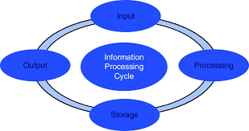
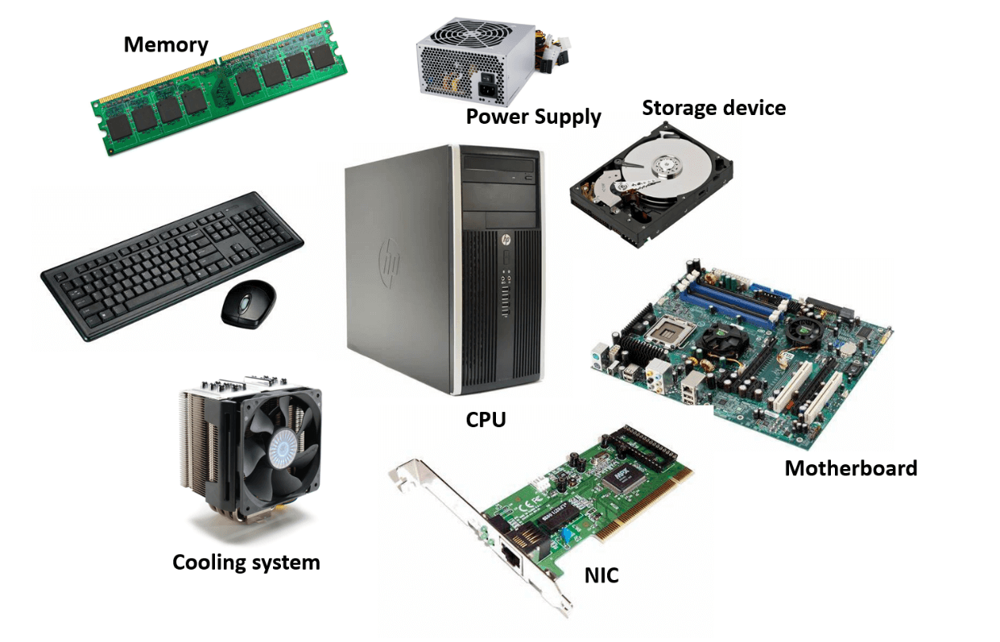

| THE HARDEST LESSON: THE BASICS OF HTML |
|---|

The hardest lesson to me is the basics of html and css. And the highlight of it is this personal website making. |
THINGS I'VE LEARNED UP IN EVERY LESSON
| Lesson 1: WHAT IS COMPUTING? |
|---|
|
There are 5 major era's that marked, the major stages |
| Lesson 2: PROFESSIONS & CAREER IN COMPUTING |
|---|
|
There are eight categories of career opportunities that people |
| Lesson 3:INFORMATION PROCESSING CYCLE |
|---|
|

there are 4 phases of cycle in processing an information |
| Lesson 4: FOUR COMPUTER COMPONENTS OF A COMPUTER SYSTEM |
|---|
|

The four computer components in a computer system are |
| Lesson 5:BASIC CONCEPT OF COMPUTER SECURITY |
|---|
|
in this lesson i learned that it is immportant to keep |
THE HIGHLIGHT OF THE MOST CHALLENGING LESSON
| THE HARDEST LESSON: THE BASICS OF HTML |
|---|
|
The hardest lesson to me is the basics of html and css. And the highlight of it is this personal website making. |